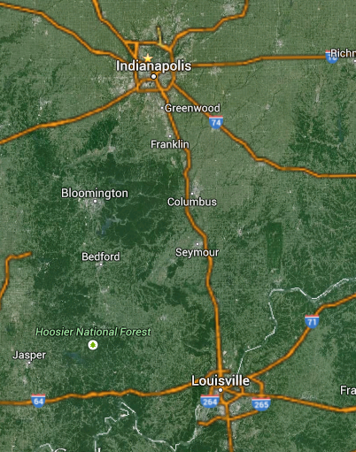

Getting Laravel Ready
An introduction to Laravel and some modern PHP practices
Web developer with a computer science background
Also work as a Junior Software Engineer
Born and raised in Columbus, Indiana and have been known to say y'all

What would you like
to get out of this workshop?
I want to prepare as many people as possible to use
Laravel and these concepts
Interrupt me to answer questions
with a simple handraise or comment
What we'll be covering
- Preparing for Laravel/AngularJS Contact Manager workshop by Eric Jones
- Discussing the when and where of using Laravel
- Practicing the concepts, so you can use them once we're done
- What we'll be using (ideally)
- PHP 5.4+ with MCrypt extension, composer, Laravel, Homestead (a virtual machine), terminal, your favorite text editor or ide
- Some 'better' practices
- Namespacing (composer), PSR-4, PSR-2, unit testing
- 'Best practices' are constantly changing
- Programming is still a new craft, especially web applications
- Part of the beauty of this field is its rapid progress
- Laravel is moving from 4.2 to 5.0 in November
Why use Laravel
...or any framework?
- Learning C
- Really cool stuff!
- Projects were really cool until they weren't.
- Learned to implement some common structures like stack, linked list, hash table
- Tough to get solution started. Ended up being super useful for the even harder projects
- Personal feedback
- Frameworks try to solve some of the tough parts of you solutions, so that you can focus more on the 'solution domain'.
- When you can to use existing solutions
- Don't reinvent the wheel
- No point in re-doing what the community has already done (especially if it's unit tested)
Where can we use Laravel
- Just about anywhere...
- ~80% of web servers have PHP installed
- ~50% of sites already use PHP
- Every other site uses PHP
- https://blog.engineyard.com/2014/php-5-10th-anniversary
- Small personal projects, large company applications
Small Application
Personal Blog
- Single user auth
- Not much infrastructure
- Set up landing page, blog index
- Store posts as flat files
Medium Application
Employee Time Tracker
- Multiple user auth
- User actions
- Each employee can enter his/her time
- Project managers can add employees to specific projects
- Accountants need to fetch data and run reports
- Store data in MySQL database on local/remote box
Large Application
Multi-tenant Content Management System
- Multiple subdomains, users, databases
- Leverage and manage multiple cloud providers / services
- Company OAuth and standard authentication
- List any and all the features that can tag along with enterprise / large level applications
Today's workshop
Focusing on Small Application
+
Getting Up and Running
One-way Order Service
- sqlite
- Single user auth
- Three pages
/